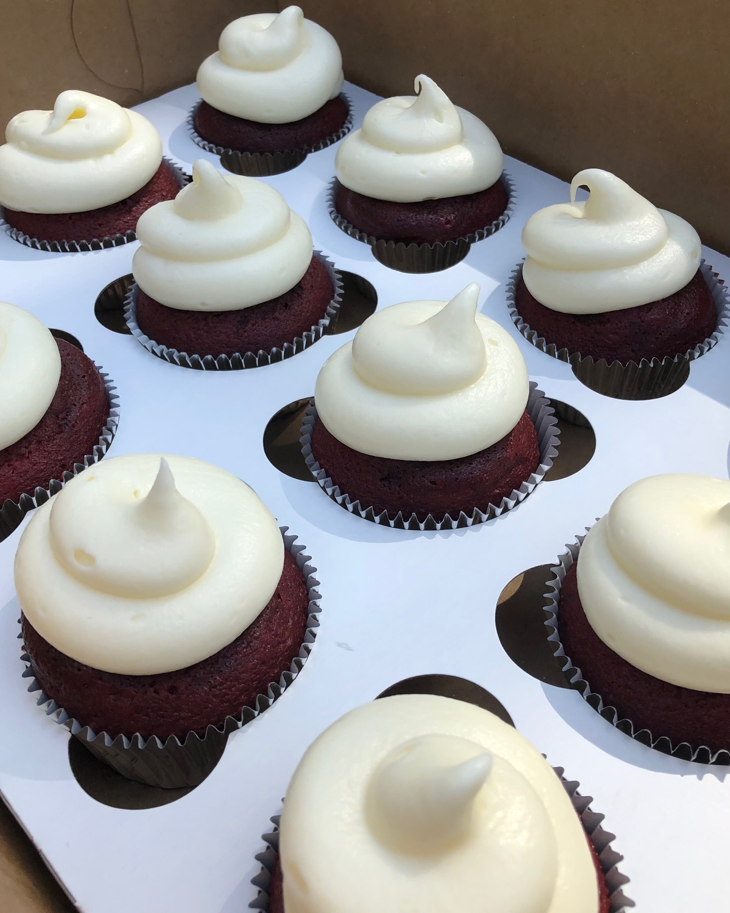
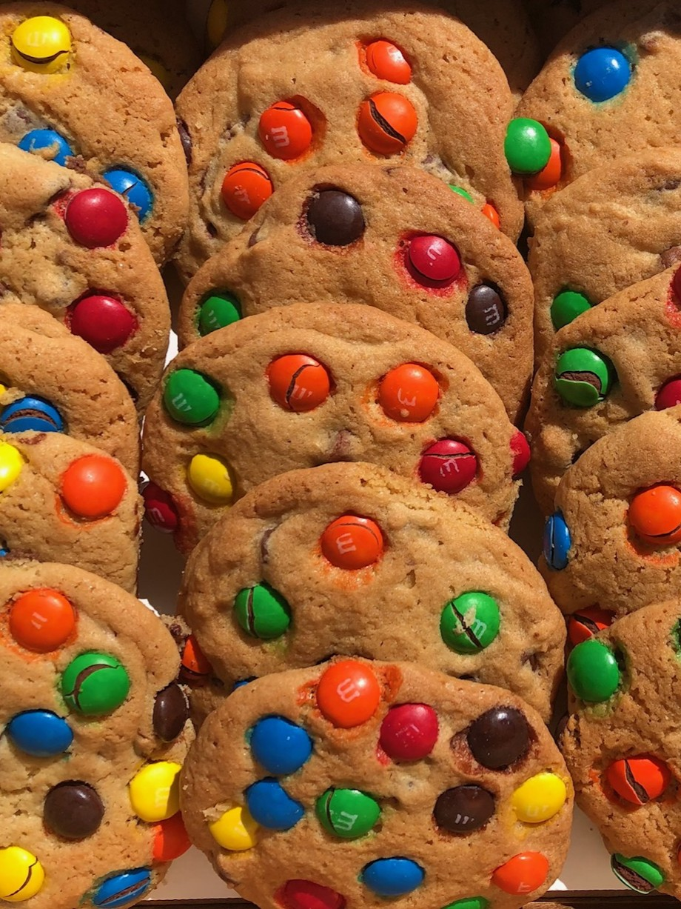
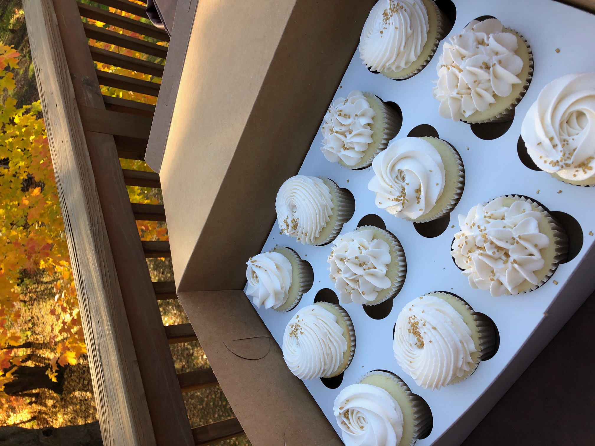
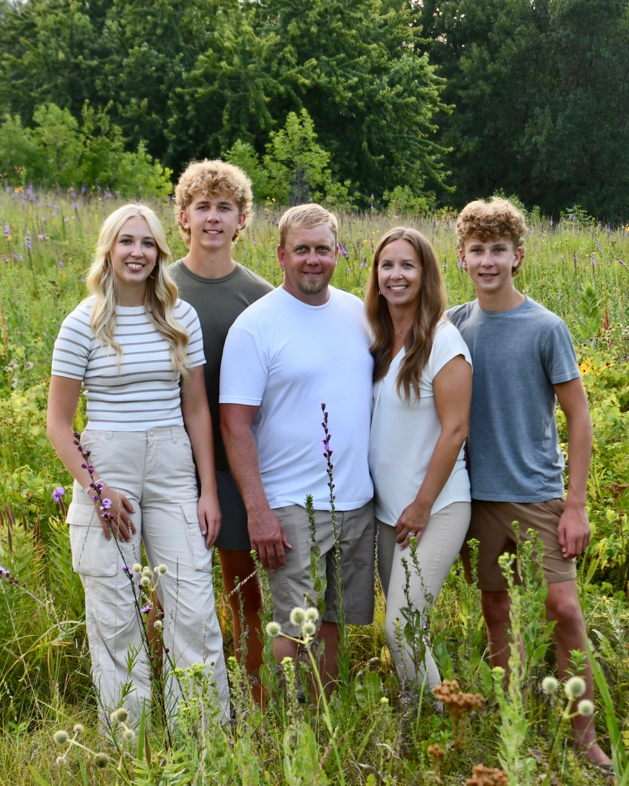
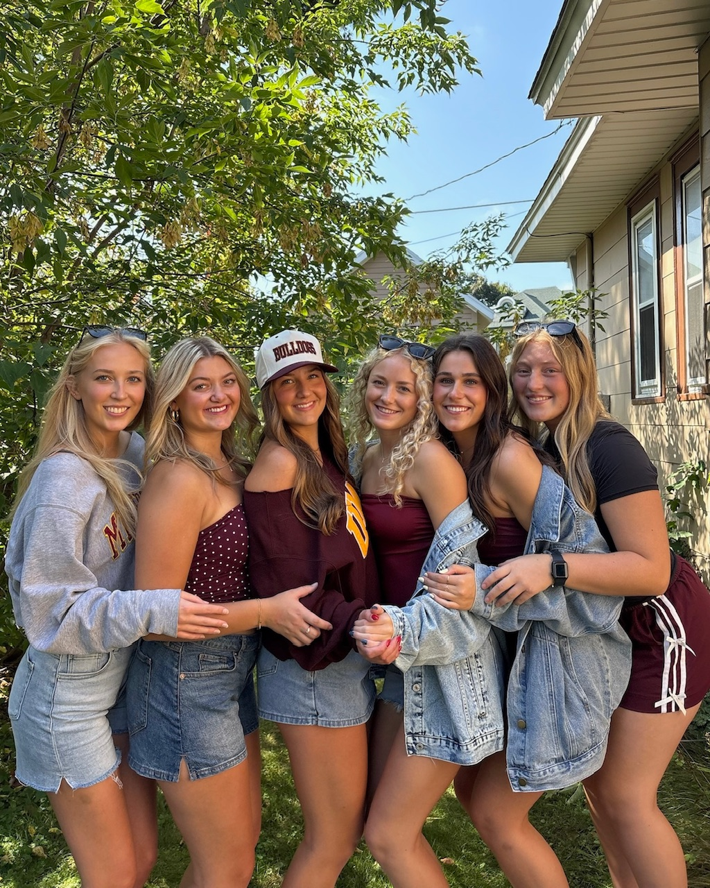

My Hobbies & Interests
Discover the activities and passions that bring joy to my life, from creating delicious treats to cherishing moments with family and friends.
Baking
Baking has been a passion of mine for many years. Trying out new recipes and perfecting old favorites has always been so much fun. My family always looked forward to the desserts I made for holidays, and I've baked almost every family member a birthday cake on their special day.
What started as a hobby eventually grew into a small business. From 2021 to 2024, I ran Jada's Cakes, creating cupcakes, cakes, and cookies to order. I managed all orders and expenses on my own, which helped me develop strong time management skills. I truly loved what I did.
Although I eventually decided to step away from the business, I still enjoy baking whenever I have the time. I especially love making banana bread for my friends—and maybe some chocolate chip cookies for my brothers, if they're lucky.



Spending Time with Family and Friends
I've always been very close with my family. We've spent countless hours together around the dining room table or watching Wheel of Fortune on TV. But the most cherished memories I have are from the time we spent on the lake in my hometown of Madison Lake. Growing up, my parents taught me how to wakeboard behind our ski boat, and I loved whipping my closest family friends off the tube. We also spent hours swimming at the sandbar, making those moments truly unforgettable.
Some of my favorite memories are the ones I've made with my friends. Whether we're cheering at school games dressed head to toe in maroon and gold, going on spontaneous late-night adventures, or spending hours watching our show for the hundredth time, we always find a way to make ordinary moments unforgettable. It's the laughter that stays with you long after we say goodnight, the shared traditions that feel like our own little world, and the comfort of knowing we can always count on each other that make our time together so special.

